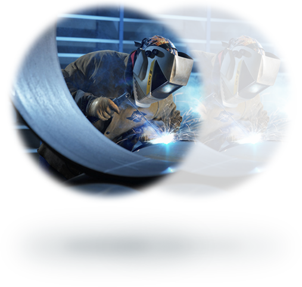

Non-Destructive Testing
NDT is a wide group of analysis techniques used in science and
industry to evaluate the properties of a material, component or
system without causing damage. The terms Nondestructive examination
(NDE), Nondestructive inspection (NDI), and Nondestructive evaluation
(NDE) are also commonly used to describe this technology.

Welding Inspection
The Certified Welding Inspector certification is more than a rewarding career.
It involves great responsibility and remarkable skill demonstration. The CWI® is
widely recognized, both nationally and internationally, and successful companies
have come to rely on this AWS certification when ensuring the highest level of
quality workmanship. As a Certified Welding Inspector, you will find this
career path lucrative and rewarding.

Quality Assurance and Quality Control
The terms quality assurance and quality control are often used
interchangeably to refer to ways of ensuring the quality of a service
or product. The terms, however, have different meanings.
Assurance: The act of giving confidence, the state of being certain or
the act of making certain.Quality Assurance: The planned and systematic
activities implemented in a quality system so that quality
requirements for a product or service will be fulfilled.

Manpower
We supply qualified and motivated men for a variety of contracts throughout
the inspection industry.